Frames — 45.000 s
Cadência 4 fps. Timestamps nominais; para cortes exatos inspecione o original frame a frame.
0.000 s0.250 s0.500 s0.750 s1.000 s1.250 s1.500 s1.750 s2.000 s2.250 s2.500 s2.750 s3.000 s3.250 s3.500 s3.750 s4.000 s4.250 s4.500 s4.750 s5.000 s5.250 s5.500 s5.750 s6.000 s6.250 s6.500 s6.750 s7.000 s7.250 s7.500 s7.750 s8.000 s8.250 s8.500 s8.750 s9.000 s9.250 s9.500 s9.750 s10.000 s10.250 s10.500 s10.750 s11.000 s11.250 s11.500 s11.750 s12.000 s12.250 s12.500 s12.750 s13.000 s13.250 s13.500 s13.750 s14.000 s14.250 s14.500 s14.750 s15.000 s15.250 s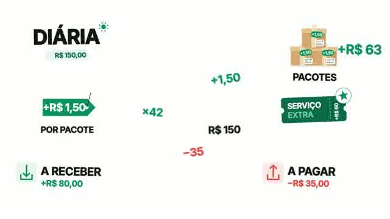
15.500 s15.750 s16.000 s16.250 s16.500 s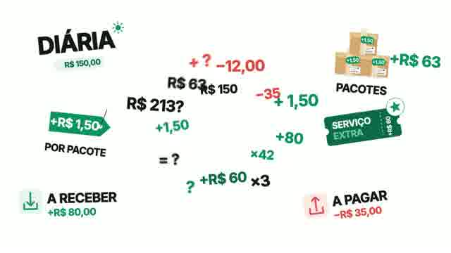
16.750 s17.000 s17.250 s17.500 s17.750 s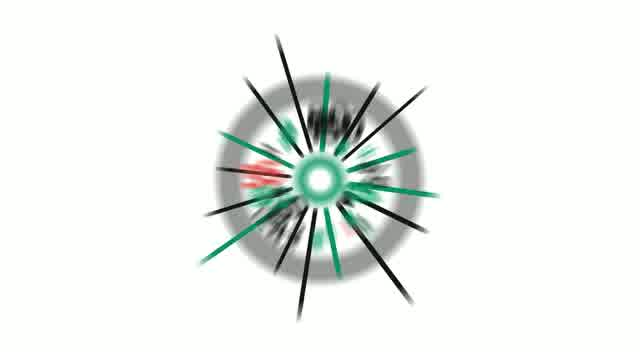
18.000 s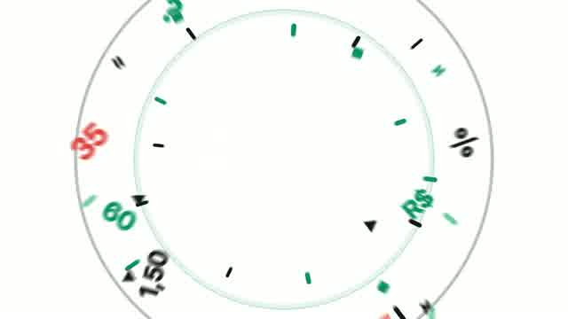
18.250 s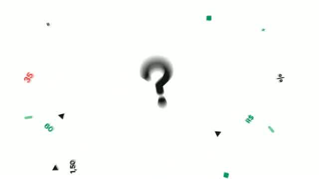
18.500 s18.750 s19.000 s19.250 s19.500 s19.750 s20.000 s20.250 s20.500 s20.750 s21.000 s21.250 s21.500 s21.750 s22.000 s22.250 s22.500 s22.750 s23.000 s23.250 s23.500 s23.750 s24.000 s24.250 s24.500 s24.750 s25.000 s25.250 s25.500 s25.750 s26.000 s26.250 s26.500 s26.750 s27.000 s27.250 s27.500 s27.750 s28.000 s28.250 s28.500 s28.750 s29.000 s29.250 s29.500 s29.750 s30.000 s30.250 s30.500 s30.750 s31.000 s31.250 s31.500 s31.750 s32.000 s32.250 s32.500 s32.750 s 33.000 s33.250 s33.500 s33.750 s34.000 s34.250 s34.500 s34.750 s35.000 s35.250 s35.500 s35.750 s36.000 s36.250 s36.500 s36.750 s37.000 s37.250 s
33.000 s33.250 s33.500 s33.750 s34.000 s34.250 s34.500 s34.750 s35.000 s35.250 s35.500 s35.750 s36.000 s36.250 s36.500 s36.750 s37.000 s37.250 s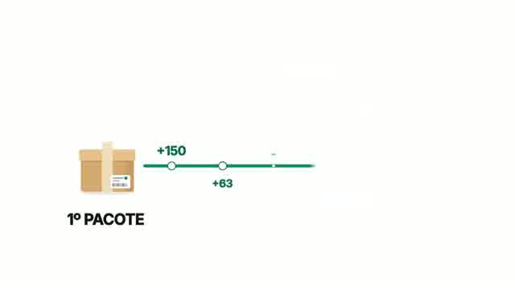
37.500 s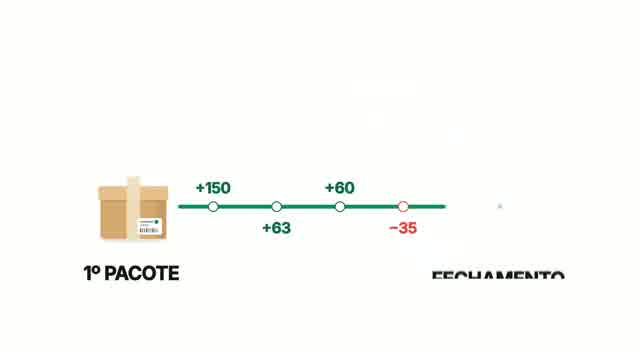
37.750 s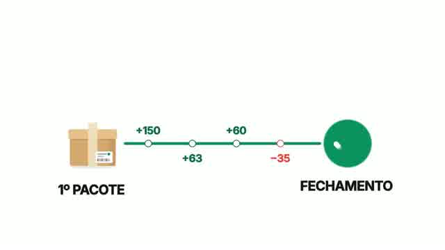
38.000 s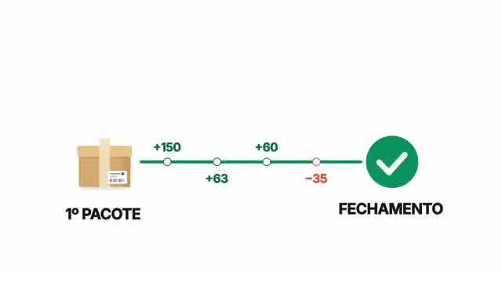
38.250 s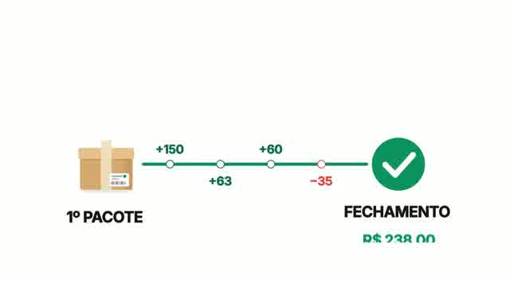
38.500 s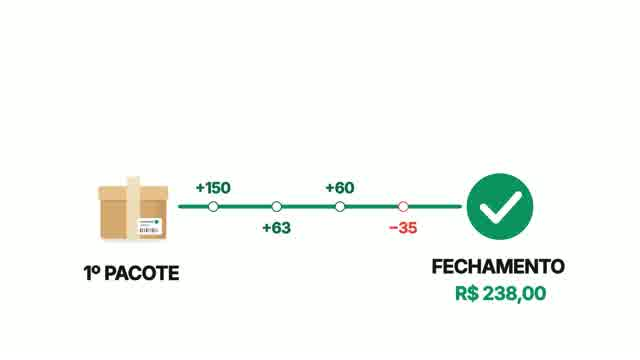
38.750 s39.000 s39.250 s39.500 s39.750 s40.000 s40.250 s40.500 s40.750 s41.000 s41.250 s41.500 s41.750 s42.000 s42.250 s42.500 s42.750 s43.000 s43.250 s43.500 s43.750 s44.000 s44.250 s 44.500 s44.750 s
44.500 s44.750 s